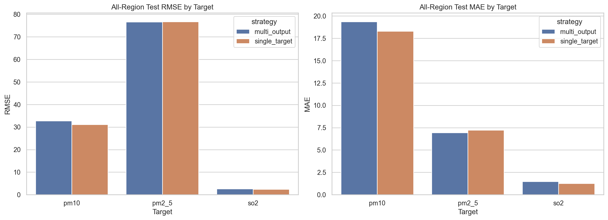
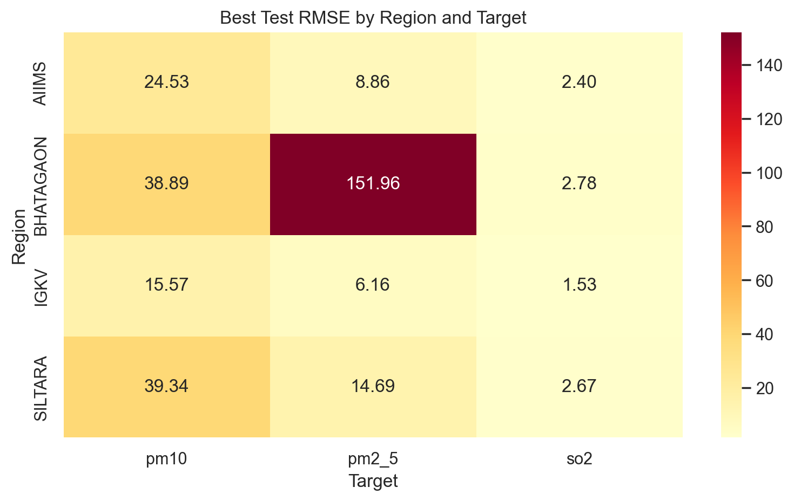
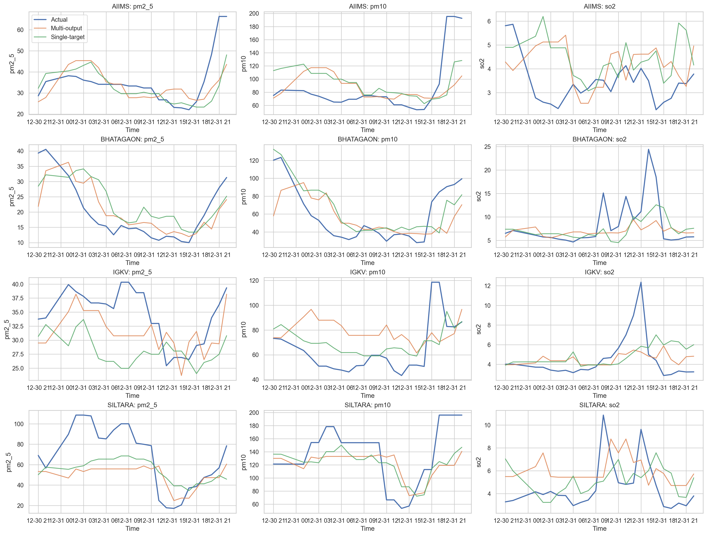

Cleaned rows after regional merge and all-region concatenation.
AI / ML Internship Portfolio Project
AirSense AI
Multi-region air-pollution forecasting that cleans real DCR workbooks from four Raipur monitoring regions and predicts future PM2.5, PM10, and SO2 levels.
Project demo
Interactive prediction walkthrough with deployable ML app packaging
Show the full workflow in one place: raw DCR data preparation, feature engineering, prediction inputs, model outputs, visual evaluation artifacts, and dashboard/API readiness.
Interviewer Demo
Input station readings and show a next-step prediction
This browser demo mirrors the project workflow with region, pollutant, weather, and time inputs. The production model is trained in Python and served through the Streamlit/API app; this page uses a lightweight client-side estimator for GitHub Pages.
Verified Data Build
One combined dataset from four raw DCR archives
The project converts inconsistent Excel workbooks into a single modeling table with region labels, normalized columns, clean timestamps, and duplicate handling.
Main data resolution for the final forecasting workflow.
Used for the quick local validation run and sanity checks.
AIIMS, Bhatagaon, IGKV, and SILTARA monitoring stations.
| Region | Rows | Hourly | Quarter-hourly |
|---|---|---|---|
| AIIMS | 154,109 | 30,000 | 124,109 |
| Bhatagaon | 147,966 | 29,395 | 118,571 |
| IGKV | 151,801 | 29,891 | 121,910 |
| SILTARA | 132,555 | 29,957 | 102,598 |
Workflow
Built like a real machine-learning pipeline
The code is structured so the same workflow can run locally for validation and in Colab for the full data-heavy modeling pass.
Extract raw archives
Reads the four DCR zip files and discovers station folders automatically.
Normalize workbooks
Handles .xlsx, .xls, and .xlsb files, daily sheets, headers, and timestamps.
Build combined dataset
Adds a region label and writes the combined CSV with dataset reports.
Train forecasting models
Creates time features, lag features, rolling stats, and pollutant targets.
Python
Pandas
Scikit-learn
Time-series features
Random Forest
Colab
Modeling Evidence
Demo outputs from the validated local run
These plots come from a fast hourly smoke run used to verify the end-to-end model workflow. Replace them with final quarter-hourly Colab results after the full run.



Best PM10 demo R2
0.58
Best SO2 demo R2
0.43
Engineered features
201
Smoke test rows
104,791